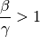
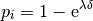
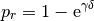

Generic 1: SIR - Simple single-node outbreak¶
This first tutorial is a simple SIR epidemic in a single-node, village-scale location. The tutorial describes the differences between the stochastic EMOD model and the deterministic SIR model and demonstrates how the Epidemiological MODeling software (EMOD) is configured to simulate an SIR epidemic.
After running the base simulation of the SIR epidemic, you can vary the parameters for disease infectivity and infection duration to see the effect on the height of the epidemic peak, the time to reach the peak, and the cumulative number of disease cases.
The SIR model¶
The simplest way to model epidemic spread in populations is to classify people into different population groups or compartments. One of the classic but still widely used models divides people into three groups: S - susceptible, I - infected/infectious, and R - recovered/immune. This model was first used by Kermack and McKendrick in 1927 and has subsequently been applied to a variety of diseases, especially airborne childhood diseases with life-long immunity upon recovery, such as measles, mumps, rubella, and pertussis.
S, I and R represent the number of susceptible,infected, and recovered individuals, and N = S + I + R is the total population. The infectious rate β controls the rate of spread which represents the probability of transmitting disease between a susceptible and an infectious individual. Recovery rate, γ = 1/D, is determined by the average duration, D, of infection.
If the course of the infection is short (emergent outbreak) compared with the life time of an individual, and the disease is non-fatal, vital dynamics (birth and death) can be ignored. In the deterministic form, the SIR model can be written as follows:

It is challenging to derive exact analytical solutions of the previous equations because of the non- linear dynamics. However, the key metrics that control the spread can be derived. At the initial seeding of the infection, the following condition needs to be satisfied for a disease to spread:

If the number of infections at the initial stage is small and the initial R = 0 then S is close to N and the condition becomes:

where β/γ is named the reproductive number (R0). R0is the average number of secondary cases generated by an index case in a fully susceptible population. The disease will spread in the population when R0> 1 and will die out if R0< 1.
SIR and EMOD model comparison¶
The EMOD model is a discrete and stochastic version of the SIR model with state changes occurring at fixed time steps and an exponentially distributed duration of infection. The discrete form of the previous equation at each time step from to can be written as:

The infection and recovery process can be represented as probabilistic binomial draws where:
The total rate of contagion shedding from all infected individuals (the force of infection):

The probability of infection:

Probability of recovery:

Therefore,

Because the EMOD model is stochastic and discrete, the accuracy of the result will depend on δ which is set with the parameter Simulation_Timestep. By default, δ = 1 which is a day but you can choose a smaller time step in order to get more accurate results.
One of the key the differences between stochastic and deterministic systems is the value of R0. A ordinary differential equation (ODE) model will never predict an outbreak when R0< 1, especially when R0 is close to 1. In stochastic simulations it is possible to see outbreaks.
For more information on the mathematics of the EMOD model, see Heterogeneity and transmission scaling in the generic documentation set.
Demographic inputs¶
The demographic file generic_scenarios_demographics, defines a single node with 10,000 individuals and has a fixed birth and death rate at 20 per 1000 individual per year (0.0000548 per day). This demographics file is used by this tutorial and several of the other Generic simulation tutorials.
{
"NodeID": 1,
"NodeAttributes": {
"InitialPopulation": 10000,
"BirthRate": 0.0000548
},
"IndividualAttributes": {
"MortalityDistribution": {
"NumDistributionAxes": 2,
"AxisNames": ["gender", "age"],
"AxisUnits": ["male=0,female=1", "years"],
"AxisScaleFactors": [1, 365],
"NumPopulationGroups": [2, 1],
"PopulationGroups": [
[0, 1],
[0]
],
"ResultUnits": "deaths per day",
"ResultScaleFactor": 1,
"ResultValues": [
[0.0000548],
[0.0000548]
]
}
}
}
For some of the Generic tutorials that use generic_scenarios_demographics, including this tutorial, the birth and death rate needs to be 0. In this case, the birth and death process is disabled in the configuration file (config.json) by setting the parameter Enable_Vital_Dynamics to 0.
You can view the demographics file at <path_to_directory>ScenariosInputFiles where <path_to_directory> is the location where either the Quick Start was installed. For more information on demographics files, see Input data files.
Key configuration parameters¶
You can view the complete config.json at <path_to_directory>ScenariosGeneric Scenarios01_SIR directory.
Demographics parameters¶
Set Enable_Vital_Dyanamics to 0. This will disable vital dynamics (birth and death) in the simulation.
SIR model setup parameters¶
The EMOD generic simulation uses an SEIR-like disease model by default. You can modify the default SEIR model to an SIR model by turning off the incubation period and immune decay in the config.json file. For more information, see General disease parameters.
Set the following parameters:
- Set Siumulation_Type to “GENERIC SIM.”
- Set Base_Incubation_Period to 0.
- Set Incubation_Period_Distribution to “FIXED_DURATION.”
- Set Enable_Immune_Decay to 0.
Disease parameters¶
As demonstrated above, the spread of disease in the SIR model depends on the basic reproductive number R0=β/γ . In this simulation, the average infection duration is 4 days, and R0=14 (measles-like). An exponentially distributed period is used to match the behavior of ODE. For more information, see General disease parameters.
Set the following parameters:
- Set Base_Infectivity to 3.5.
- Set Base_Infectious_Period to 4.
- Set Infectious_Period_Distribution to “EXPONENTIAL_DURATION.”
Simulation duration parameters¶
The simulation is run for 3 months with a 1-day time step. For more information, see Simulation setup parameters.
Set the following parameters:
- Set Simulation_Timestep to 1.
- Set Simulation_Duration to 90.
Interventions¶
You can define interventions and events for a simulation through a JavaScript Object Notation (JSON) formatted campaign file, typically called campaign.json.
Interventions can have either a positive effect on a simulation (for example, a vaccination campaign) or a negative impact (for example, an outbreak). For this simulation, the intervention is an outbreak.
Initial outbreak¶
This simulation uses an OutbreakIndividual event at day 1 as the initial seeding of the infection. For more information, see OutbreakIndividual parameters.
{
"Use_Defaults": 1,
"Campaign_Name": "Initial Seeding",
"Events": [{
"Event_Coordinator_Config": {
"Intervention_Config": {
"Antigen": 0,
"Genome": 0,
"Outbreak_Source": "PrevalenceIncrease",
"class": "OutbreakIndividual"
},
"Target_Demographic": "Everyone",
"Demographic_Coverage": 0.0005,
"class": "StandardInterventionDistributionEventCoordinator"
},
"Event_Name": "Outbreak",
"Nodeset_Config": {
"class": "NodeSetAll"
},
"Start_Day": 1,
"class": "CampaignEvent"
}]
}
You can view the complete campaign.json in <path_to_directory>ScenariosGeneric Scenarios01_SIR directory.
Run the simulation¶
Run the simulation and generate graphs of the simulation output. For more information, see How to run Quick Start simulations.
Note
Because the EMOD model is stochastic, your graphs may appear slightly different from those given below.
Simulation output graphs¶
Figure 1: growth of infection and depletion of the susceptible population is a graph of the complete course of the outbreak. After the initial fast growth, the epidemic depletes the susceptible population. Eventually the virus cannot find enough new susceptible people and dies out.
Figure 1: Growth of infection and depletion of the susceptible population

Figure 2: All inset charts
Exploring the model¶
The EMOD model is individual-based, which allows the implementation of a flexible distribution. In an ODE model the time constants are exponentially distributed, however, this is not case for some diseases. You can test the effects of different distributions in the EMOD executable by changing Infectious_Period_Distribution in the configuration file.
Set the value of Infectious_Period_Distribution to “FIXED_DURATION” and let all other parameters remain the same. The following output shows a much faster spread of disease when using a fixed duration for the infection period.

Figure 3: Infectious_Period_Distribution is FIXED_DURATION
You can also try the same SIR model with different basic reproductive number values. For example, run the simulation with R0 equal to 0.2 and 2.0.
- Simulation with R0=0.2 : Keep Base_Infectious_Period equal to 4 and change Base_Infectivity to 0.05.
- Simulation with R0=2.0 : Keep Base_Infectious_Period equal to 4 and change Base_Infectivity to 0.5.
The following images shows the simulation results with R0 equal to 0.2 and 2.0.

Figure 4: R0=0.2 - No Outbreak (Base_Infectivity = 0.05)

Figure 5: R0=2.0 - Outbreak (Base_Infectivity = 0.5)